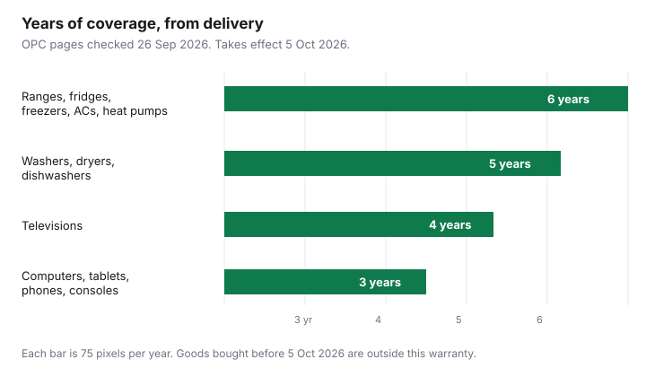

Household Items and Supplies · Canada
Québec's New Legal Warranty of Good Working Order (Oct. 5, 2026): What It Covers for Appliances and Electronics
Québec is adding a legal warranty with a clock you can read. For a set list of new appliances and electronics, a malfunction during a fixed number of years means a free repair, without a debate about what “a reasonable life” should have been. The warranty takes effect on 5 October 2026. It is not in force on the date of this guide. This page explains the Office de la protection du consommateur (OPC) rules. It is not legal advice, and it does not tell you to buy, skip, or sue.
The durations below are from the OPC’s consumer page, last updated 16 September 2026, and the merchant question page, last modified 24 September 2026. The OPC’s news release of 15 September 2026 uses the same years. If a cashier’s script disagrees with those pages, use the pages. Other Québec money rules that are not this warranty are on the Québec personal-finance guide.
Key takeaways
- The warranty of good working order takes effect 5 October 2026. It covers listed new goods bought or leased long-term from a merchant on or after that date.
- The clock starts at delivery, not at the day you paid. Ranges, refrigerators, freezers, air conditioners, and heat pumps: 6 years. Washers, dryers, and dishwashers: 5. Televisions: 4. Computers, tablets, phones, and game consoles: 3.
- You show that the good stopped working properly during that period. Parts, labour, and reasonable transport are included. Abuse and normal maintenance are not.
- Claim from the merchant or the manufacturer. Neither can send you away to the other. A refused repair can go to a formal notice and a complaint to the OPC.
- The warranty follows the good. A later buyer is covered only if the first new sale or lease was on or after 5 October 2026 and time remains.
What the warranty of good working order is and when it starts
It is a legal warranty in the Consumer Protection Act, not a plan you add at the till. The OPC’s 15 September 2026 release calls it automatic and free. For the listed goods, a malfunction during the fixed period gives you a right to a free repair without the extra proof that the older “reasonable duration” warranty can require. Those older warranties do not disappear. The OPC says they keep applying during the new period and after it ends. You choose which warranty to use. A dryer that dies after a year could be a free repair under the new warranty, or a refund claim under reasonable duration. The merchant page says you are not required to use the new warranty first.
Two dates matter, and they are not the same. The contract date decides whether this warranty exists at all. The OPC merchant page says it applies to a contract of sale, or a long-term lease, of a new good between a consumer and a merchant from 5 October 2026 inclusive. A purchase or lease signed before that date is out, even if the truck arrives after 5 October. The duration, once the warranty exists, is counted from delivery to the first buyer, not from the day the card was charged. A long-term lease uses the retail value of the good as the place where the merchant must show the duration, near that value.
Brand, range, and price do not change the years. The merchant page says the listed goods are covered regardless of brand, range, or the price paid, as long as the contract is the right kind. A contract between two merchants is not covered. A business outside Québec that sells online to a Québec consumer is covered: the OPC says any online platform that contracts with Québec consumers must follow the rule. There is no exemption a merchant can write into the receipt. A repair does not restart the years. A washer repaired four years after delivery has one year left of a five-year warranty. Time the merchant or manufacturer holds the good for that repair is added back. Two weeks in the shop adds two weeks to the end date. The law does not set a repair deadline. The OPC says the repair must still be done in a reasonable time, and a merchant may offer a replacement if a repair is not available in that time. You cannot fix it yourself and send the bill afterwards. You ask first, and they either repair it or authorize a third party.
Coverage durations by product (table)
Fourteen categories appear in the 15 September 2026 release, grouped into four durations. The consumer page, updated 16 September 2026, prints the same groups. “Range” here is the OPC’s cuisinière: a stove or range. A heat pump on this list is the appliance the OPC names, not a promise about a provincial energy rebate. Energy use of the machine you buy is a separate question on the EnerGuide label guide.
| Goods | Duration | Counted from |
|---|---|---|
| Range, refrigerator, freezer, air conditioner, heat pump | 6 years | Delivery to the first acquirer |
| Washer, dryer, dishwasher | 5 years | Delivery to the first acquirer |
| Television | 4 years | Delivery to the first acquirer |
| Laptop, desktop computer, video game console, cell phone, tablet | 3 years | Delivery to the first acquirer |

Merchants must show the duration in an obvious way near the advertised price: on a site, a tag, an ad, or a flyer. The OPC asks them to write “garantie de bon fonctionnement” in full, in readable type, next to that product’s price, not a pile of every product’s years beside one computer. Manufacturers must publish the duration online in a way a shopper can understand. If the tag and the OPC table disagree, the table on the OPC site is the rule you cite. The merchant’s tag is how they are supposed to tell you before you pay.
What's excluded: abuse, normal maintenance
The warranty is a free repair when the good malfunctions: it does not work properly, or it does not work at all. It is not a service plan for wear you were always going to pay for. The OPC excludes damage from abusive use, and it excludes normal maintenance and the parts that maintenance replaces.
The merchant page gives paired examples, checked on the 24 September 2026 update. A refrigerator whose cooling element stops is the kind of failure they describe as covered. A refrigerator that overheats because the door was left open for days is not. A black band that appears on a phone screen is their covered example. A phone that stops after it is dropped is not. Heat-pump vents that no longer open are their covered example. A heat-pump filter replaced in ordinary service after a few years is not. A dryer door that will not close because heat warped the latch is their covered example. A key scratch on the door is not. The consumer page uses the same idea for a washer tub damaged by objects that do not belong in a washer.
Labour is not an extra invoice. The OPC says the warranty includes parts, labour, and reasonable transport or shipping. If you choose a shipping method whose cost is excessive, the merchant may refuse to pay all of that cost. They cannot bill you a labour charge for a repair the warranty covers. Nothing on the OPC pages requires you to buy their cleaner, their filter schedule, or an extended plan in order to keep the legal warranty. Normal maintenance is simply not what this warranty pays.
How to claim: merchant or manufacturer, proof of purchase, formal notice
Start with the merchant or the manufacturer. The consumer page says that choice is yours, including doing both. What you have to show, in the OPC’s words, is that the good stopped working properly during the covered period. The pages do not add a registration step and do not say a missing loyalty account voids the repair. A receipt, a delivery date, and a serial number are how a household proves which good it is and when the clock started. Treat them as the claim kit, not as a fee.
| Item | Why you keep it |
|---|---|
| Receipt or lease contract | Shows a consumer–merchant contract on or after 5 Oct 2026 |
| Delivery date | The duration runs from delivery, not from the payment date |
| Serial number and model | Identifies the unit if you later sell it or if the file is disputed |
| Short description of the failure and the date it started | The OPC standard is a malfunction during the period, not a story about the brand |
| Written request, then a formal notice if they refuse | The consumer page points to a mise en demeure before a complaint to the OPC |
If the merchant or manufacturer refuses a repair the warranty should cover, the consumer page says you can send a formal notice and file a complaint with the OPC. The merchant page adds an earlier step: try to settle, including through Parle consommation, the OPC’s free online dispute tool for merchants who join it. A formal notice can go to the merchant, the manufacturer, or both. A court claim can ask, among other things, to cancel the contract or reduce the price. The OPC does not replace the court, and this guide does not draft the letter. The consumer contact page lists Montréal 514 253-6556, Québec 418 643-1484, and 1 888 672-2556 elsewhere in Québec and Canada. Phone hours on that page are Monday to Friday, 8:30 a.m. to noon and 1:00 p.m. to 4:30 p.m. Bring the contract, the warranty papers, and the receipt when you call. A home-insurance inventory is a different file: serials and photos for an insurer live on the home-inventory guide, and replacement cost versus actual cash value is the insurance comparison.
Do you still need an extended warranty in Québec?
The legal warranty does not come with a monthly fee. An extended warranty, which the OPC calls a garantie supplémentaire, is a separate contract and usually costs extra. From 5 October 2026, a merchant who offers that extra contract on a good this warranty covers must use the OPC’s updated written notice about legal warranties. The merchant page says merchants already had to give a written notice on legal warranties before offering an extra one, and the notice changes because this new warranty is itself a legal warranty. Read that notice before you sign. If the notice is the old form, or if the pitch says the legal warranty is only one year, stop and open the OPC table.
Whether the extra plan is worth the price depends on what it adds after the legal years, what your card certificate already does, and the repair quote you can get in writing. This guide does not rank plans and does not invent a failure rate. The decision steps, including the card certificate and Ontario’s different warranty page, are in Are extended warranties worth it in Canada?. In Québec, the first question on or after 5 October 2026 is whether the malfunction would already be a free repair.
Buying used in Québec: the warranty transfers
The consumer page says the warranty is transferable from one consumer to another. When a covered good is sold used, it continues until the original duration ends. The merchant page is more precise about the conditions. The warranty targets new goods, but a later consumer can use it if the good was first sold or leased new to a first acquirer on or after 5 October 2026, and the warranty is still in force. The years still run from delivery to that first acquirer. A refurbished good is not given a fresh six years because a shop cleaned it. If the first sale was before 5 October 2026, this warranty never attached, and a resale does not create it.
The later buyer turns to the manufacturer or to the merchant who first sold the good new, or to both. The person who sold it to you in a private sale is not, on these pages, the party who must perform the free repair. Ask for the original delivery date and the serial number before you pay a private seller. Without the first delivery date you cannot tell whether year four of a television is inside the four-year warranty or past it. Other legal warranties can still be argued on a used good. They are the “reasonable duration” path, which the OPC says can require more proof than this fixed clock. Keep the private-sale paperwork with the claim kit above.
Sources & date stamps
- OPC consumer page on the warranty for appliances and electronics, last update 16 Sep 2026, read 26 Sep 2026: durations, transfer, merchant or manufacturer, exclusions, parts and labour, formal notice.
- OPC merchant and manufacturer Q&A, last modification 24 Sep 2026, read 26 Sep 2026: 5 Oct 2026 start, delivery clock, goods bought earlier even if delivered later, updated notice before an extra warranty, examples, no restart of the years.
- OPC news release on CNW, 15 Sep 2026: automatic and free, same durations, takes effect 5 Oct 2026, details at Québec.ca/garantie-bon-fonctionnement.
- OPC consumer contact page, read 26 Sep 2026: 514 253-6556, 418 643-1484, 1 888 672-2556; phone hours Monday to Friday 8:30 a.m. to noon and 1:00 p.m. to 4:30 p.m.
Frequently asked questions
Does the new Québec warranty apply to things I bought before 5 October 2026?
No. The OPC merchant page, updated 24 Sep 2026, says the warranty of good working order applies only to new goods sold or leased long-term from 5 October 2026. A good bought or leased before that date is not covered, even if it is delivered afterwards. Older legal warranties, including a reasonable useful life, can still apply.
Do I have to register the product to be covered?
No. The OPC and its 15 Sep 2026 release describe the warranty as automatic and free. You do not register the appliance with the Office to be covered. If it stops working properly during the fixed period, you ask the merchant or the manufacturer for a free repair.
Who do I claim from: the store or the manufacturer?
Either one. The OPC says you may deal with the merchant, the manufacturer, or both. The store cannot force you to the manufacturer, and the manufacturer cannot force you back to the store. If a covered repair is refused, the OPC page points to a formal notice and then a complaint to the Office.
Does the warranty follow the appliance if I sell it or buy it used?
It follows the good when that good was first sold or leased new on or after 5 October 2026 and the fixed period, counted from the first delivery, has not ended. A later buyer claims from the manufacturer or from the merchant who first sold it new. A used good whose first sale was before 5 October 2026 is outside this warranty.
Should I still buy an extended warranty in Québec?
Read the coverage you already have before you pay for more. From 5 October 2026, a merchant who offers an extra warranty on a covered appliance or electronic must use the OPC's updated written notice on legal warranties. The legal warranty itself is free. This guide is education, not advice to buy or refuse a plan.